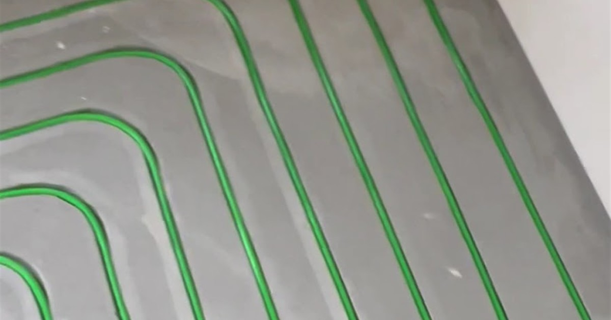

Dwie różne temperatury
Temperatura zasilania to temperatura wody wchodzącej w rury, zwykle 30–40°C. Temperatura powierzchni podłogi to coś zupełnie innego i wynosi zwykle 24–29°C, czyli mniej niż temperatura ciała. Dlatego dobrze działająca podłogówka nie jest gorąca w dotyku, tylko po prostu nie jest zimna.
Norma PN-EN 1264 przyjmuje maksymalnie około 29°C na powierzchni w pomieszczeniach stałego pobytu i do 34°C w strefach brzegowych oraz w łazience. To granice komfortu i bezpieczeństwa okładziny, a nie wartości docelowe.
Dlaczego podkręcanie nie pomaga
Podłoga oddaje ciepło całą powierzchnią, więc moc grzewcza zależy głównie od tego, ile metrów kwadratowych pracuje i jak gęsto leżą rury, a nie od tego, jak gorąca jest woda. Podniesienie zasilania o kilka stopni daje mniej, niż się wydaje, za to od razu widać je na rachunku, szczególnie przy pompie ciepła.
Jeżeli w pomieszczeniu jest za zimno przy prawidłowo dobranej instalacji, przyczyna leży zwykle gdzie indziej: za rzadki rozstaw rur w strefie przy oknie, źle wyregulowane przepływy na rozdzielaczu albo straty ciepła większe, niż zakładał projekt.
Krzywa grzewcza w jednym akapicie
Krzywa grzewcza to reguła, według której sterownik dobiera temperaturę zasilania do temperatury na zewnątrz. Im zimniej na dworze, tym cieplejsza woda idzie w podłogę. Dzięki temu instalacja nie pracuje cały czas na maksimum i nie skacze między za zimno a za gorąco.
Ustawianie krzywej to kwestia kilku korekt w ciągu pierwszego sezonu. Jeżeli w domu jest chłodno przy mrozie, a w cieplejsze dni w sam raz, krzywa jest za płaska. Jeżeli przy każdej pogodzie jest za ciepło, jest za wysoko ustawiona.
Co przy frezowanym ogrzewaniu wygląda inaczej
Rura leży w rowku około 2 cm pod powierzchnią, a nie w kilkunastu centymetrach jastrychu. Warstwa nad rurą jest cienka, więc ciepło dociera na wierzch szybciej i podłoga reaguje na zmianę nastawy w krótszym czasie.
W praktyce oznacza to dwie rzeczy. Harmonogram dobowy ma sens, bo instalacja zdąży zareagować w ciągu dnia. I nie trzeba trzymać zapasu temperatury na wszelki wypadek, co przekłada się na niższe zasilanie i tańszą pracę źródła ciepła.
Najczęstsze pytania
Jaką temperaturę ustawić na termostacie w pokoju?
Zwykle 20–22°C w pokojach i 23–24°C w łazience. Termostat pokojowy steruje temperaturą powietrza, a nie podłogi, więc nie ustawia się go na 30 stopni w nadziei, że będzie cieplej.
Czy podłoga ma być ciepła w dotyku?
Nie musi. Przy prawidłowej pracy powierzchnia ma około 24–27°C, czyli mniej niż dłoń, więc odbierasz ją jako neutralną, a nie ciepłą. Wyraźnie ciepła podłoga oznacza zwykle za wysoką temperaturę zasilania.
Jak długo nagrzewa się podłogówka?
W tradycyjnej wylewce liczy się to w godzinach, bo trzeba nagrzać całą grubą warstwę betonu nad rurą. Przy frezowanym ogrzewaniu warstwa nad rurą jest cienka, więc reakcja jest wyraźnie szybsza.
Czy można wyłączać ogrzewanie podłogowe na noc?
Nie do zera. Podłogówka lubi pracę ciągłą z obniżeniem nastawy o 1–2 stopnie, a nie wyłączanie i ponowne rozgrzewanie. Przy frezowanym ogrzewaniu obniżenia nocne działają skuteczniej niż w tradycyjnej wylewce, bo instalacja szybciej wraca do temperatury.